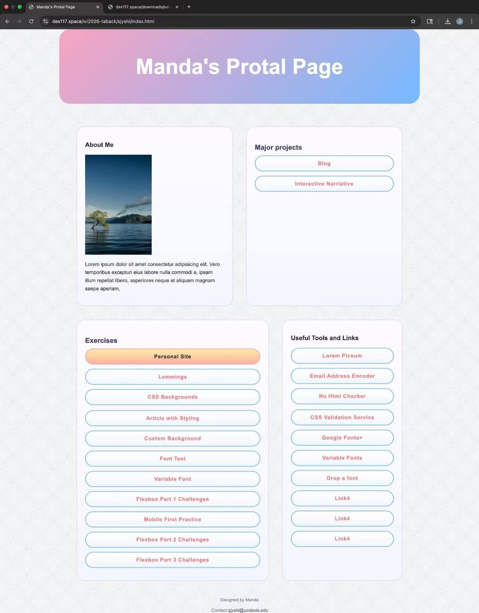

Use Visual Studio Code to build a Single-Page website based on HTML and CSS（using Manda’s portal as an example）
By Manda Shi
Introduction
This instruction is for the beginner of Visual Studio Code to get familiar with it or any one who’s interested in building their own portal. This is a task-oriented instruction instead of an introduction of Coding theory, with following this instruction step by step you could finally end up with your personal portal that fits all your preferences, you can have a clear and easy-to-understand portal page.
Audience&Scope
The target audience is the one who have a strong interest in web design and UI. With the strong interest, the person has to have some basic skills with computers, there's no need for how complex the skill is, at least know how to use keyboard and mouse. No Coding experience is needed!
This introduction does not include complex issues like JavaScript, it’s for redoing a basic completed portal page.

Required Tools & File
Why & How
In short, a good article needs to have strong enough evidence, preferably from academic articles that have been proven to be correct, so that it can withstand scrutiny. We also need to prove our point of view from different angles and make sure that our point of view will not be attacked by the other side. Article content for different readers to use different explanations can also make readers better understand and recognize the content of the article.